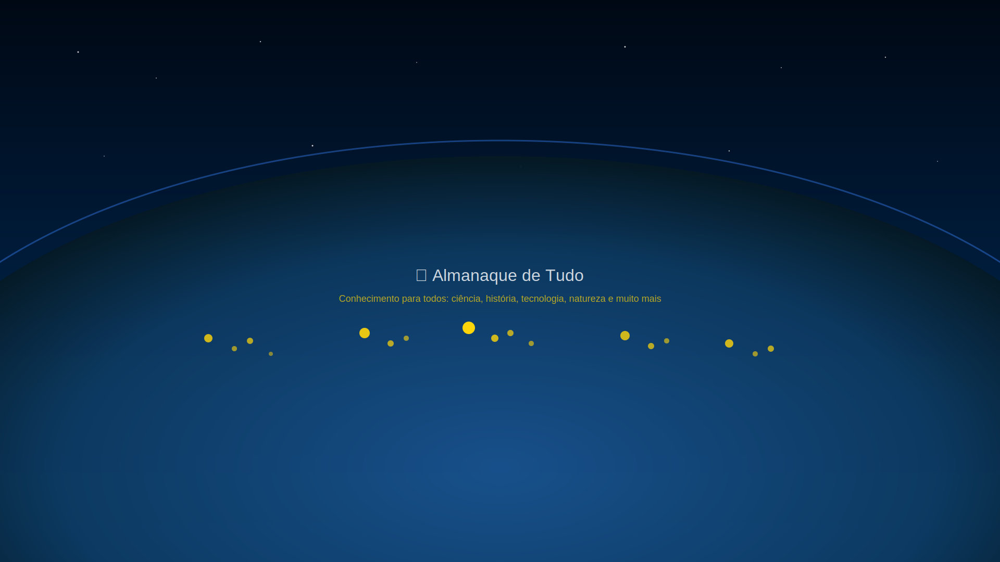

Conhecimento para todos: ciência, história, tecnologia, natureza e muito mais.
A História do Telescópio: Uma Janela para o Universo
Desde as primeiras lentes rudimentares de Galileu Galilei, que revolucionaram nossa compreensão do cosmos no século XVII, até os gigantescos observatórios modernos e o sofisticado Telescópio Espacial James Webb, a nossa capacidade de observar o universo nunca foi tão ampla e detalhada. A história dos telescópios é uma jornada fascinante de inovação tecnológica e descobertas científicas que moldaram nossa visão do lugar da humanidade no cosmos.
Os Primeiros Passos: Galileu e o Telescópio Refrator
Embora a invenção do telescópio seja frequentemente atribuída a Hans Lippershey em 1608, foi Galileu quem, ao aprimorar o design e apontá-lo para o céu em 1609, transformou o instrumento em uma ferramenta científica poderosa. Suas observações da Lua, das fases de Vênus, das luas de Júpiter e das manchas solares forneceram evidências cruciais para o modelo heliocêntrico de Copérnico, desafiando séculos de pensamento geocêntrico.
Os primeiros telescópios de Galileu eram refratores, utilizando lentes para focar a luz. Apesar de suas limitações, como aberrações cromáticas, eles abriram uma nova era na astronomia observacional.
A Revolução dos Refletores: Newton e Além
No século XVII, Isaac Newton desenvolveu o telescópio refletor, que utilizava espelhos em vez de lentes para coletar e focar a luz. Essa inovação eliminou as aberrações cromáticas dos refratores e permitiu a construção de instrumentos muito maiores e mais poderosos. Com o tempo, os telescópios refletores se tornaram o padrão para a astronomia profissional, culminando em gigantes como o Telescópio Hale em Palomar e os Telescópios Keck no Havaí.
A Era Espacial e os Telescópios Orbitais
O século XX trouxe uma nova fronteira: o espaço. A atmosfera terrestre, embora vital para a vida, distorce a luz e absorve certas faixas do espectro eletromagnético, limitando o que podemos observar do solo. Lançar telescópios para a órbita terrestre, como o icônico Telescópio Espacial Hubble, permitiu aos astrônomos uma visão desobstruída do universo em comprimentos de onda que vão do ultravioleta ao infravermelho próximo.
O Hubble, com suas imagens deslumbrantes de galáxias distantes, nebulosas e berçários estelares, redefiniu nossa compreensão do universo e inspirou gerações. Mais recentemente, o Telescópio Espacial James Webb (JWST) levou essa capacidade a um novo patamar, operando principalmente no infravermelho para observar as primeiras galáxias e a formação de estrelas e planetas com detalhes sem precedentes.
O Futuro da Observação Cósmica
A busca por uma compreensão mais profunda do universo continua. Novas gerações de telescópios terrestres, como o Extremely Large Telescope (ELT) em construção no Chile, e futuros observatórios espaciais prometem revelar ainda mais segredos cósmicos. A história do telescópio é um testemunho da curiosidade humana e de nossa incessante busca por conhecimento, expandindo continuamente nossa janela para o infinito.
O Misterioso Mundo das Plantas Carnívoras: Predadores do Reino Vegetal
No vasto e diversificado reino vegetal, algumas espécies se destacam por uma característica surpreendente e, para muitos, um tanto macabra: a capacidade de atrair, capturar e digerir presas. As plantas carnívoras são verdadeiros predadores, adaptadas a sobreviver em solos pobres em nutrientes, complementando sua dieta com insetos e pequenos animais. Descubra os incríveis mecanismos e as adaptações surpreendentes que as tornam um exemplo notável da engenhosidade da natureza.
Por Que São Carnívoras?
A maioria das plantas obtém seus nutrientes, especialmente o nitrogênio, do solo. No entanto, as plantas carnívoras geralmente habitam ambientes onde o solo é deficiente nesses nutrientes essenciais, como pântanos e turfeiras. Para compensar essa carência, elas desenvolveram armadilhas sofisticadas para capturar presas, das quais extraem os nutrientes necessários para seu crescimento e sobrevivência.
Tipos de Armadilhas
Armadilhas de Jarro (Ex: Nepenthes, Sarracenia): Folhas modificadas em forma de jarro que contêm um líquido digestivo. As presas são atraídas pela cor, néctar e odor, escorregam para dentro do jarro e são digeridas.
Armadilhas de Pinça (Ex: Dionaea muscipula - Vênus Papa-Moscas): As famosas folhas em forma de boca que se fecham rapidamente quando pelos sensíveis são tocados, prendendo o inseto.
Armadilhas de Cola (Ex: Drosera - Orvalhinha, Pinguicula): Folhas cobertas por tentáculos pegajosos que secretam uma substância adesiva, imobilizando a presa.
Armadilhas de Sucção (Ex: Utricularia - Utriculária): Pequenas bolsas subaquáticas que criam um vácuo e sugam a presa quando acionadas.
Armadilhas de Lagosta (Ex: Genlisea): Estruturas subterrâneas em forma de Y que guiam pequenos organismos para uma câmara digestiva sem saída.
Adaptações e Ecologia
Além das armadilhas, essas plantas possuem outras adaptações notáveis, como a capacidade de atrair presas com cores vibrantes, odores específicos e néctar. Elas são um componente vital de seus ecossistemas, controlando populações de insetos e contribuindo para a biodiversidade de ambientes muitas vezes hostis.
O estudo das plantas carnívoras continua a fascinar cientistas e entusiastas, revelando a incrível diversidade e as estratégias de sobrevivência que a evolução pode produzir.
Como a Inteligência Artificial está Moldando o Futuro: Uma Revolução em Andamento
A Inteligência Artificial (IA) já não é mais um conceito de ficção científica, mas uma realidade que permeia cada vez mais o nosso cotidiano. De assistentes virtuais em nossos smartphones a sistemas complexos de diagnóstico médico e carros autônomos, a IA está transformando fundamentalmente a maneira como vivemos, trabalhamos e interagimos com o mundo. Entender o básico dessa tecnologia e o que esperar para os próximos anos é crucial para navegar nesta era de rápidas mudanças.
O Que é Inteligência Artificial?
Em sua essência, a IA refere-se à capacidade de máquinas simularem a inteligência humana. Isso envolve o aprendizado (aquisição de informações e regras para usá-las), o raciocínio (uso das regras para chegar a conclusões aproximadas ou definitivas) e a autocorreção. As subáreas da IA incluem o Aprendizado de Máquina (Machine Learning), que permite que sistemas aprendam a partir de dados sem serem explicitamente programados, e o Aprendizado Profundo (Deep Learning), uma forma de Machine Learning que utiliza redes neurais artificiais com múltiplas camadas para processar dados complexos.
Aplicações Atuais e Impacto no Cotidiano
A IA já está integrada em diversas áreas:
Saúde: Auxílio no diagnóstico de doenças, descoberta de medicamentos e personalização de tratamentos.
Finanças: Detecção de fraudes, análise de mercado e consultoria de investimentos.
Transporte: Carros autônomos, otimização de rotas e gestão de tráfego.
Educação: Plataformas de aprendizado adaptativo e tutores virtuais.
Entretenimento: Recomendações personalizadas em serviços de streaming e criação de conteúdo.
Além disso, a IA está impulsionando a automação em indústrias, otimizando processos e aumentando a eficiência em uma escala sem precedentes.
Desafios e Considerações Éticas
Apesar de seu vasto potencial, a IA também apresenta desafios significativos. Questões como a privacidade de dados, o viés algorítmico, a segurança no emprego e a ética da IA são temas de debate intenso. É fundamental que o desenvolvimento da IA seja guiado por princípios éticos e regulamentações que garantam seu uso responsável e benéfico para a sociedade.
O Futuro da IA
O futuro da IA promete avanços ainda mais notáveis. Veremos sistemas mais inteligentes, capazes de raciocinar de forma mais complexa, interagir de maneira mais natural e até mesmo criar. A IA continuará a ser uma força motriz para a inovação, redefinindo indústrias e abrindo novas possibilidades que hoje mal podemos imaginar. A chave será a colaboração entre humanos e máquinas, aproveitando o melhor de ambos para construir um futuro mais inteligente e eficiente.